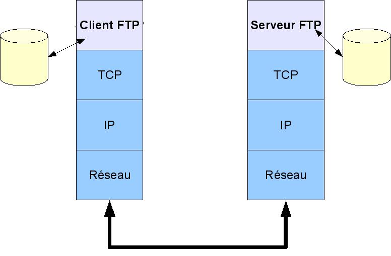
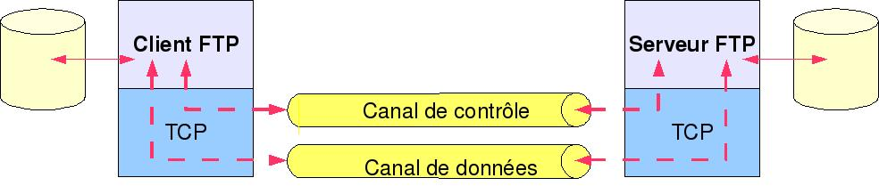
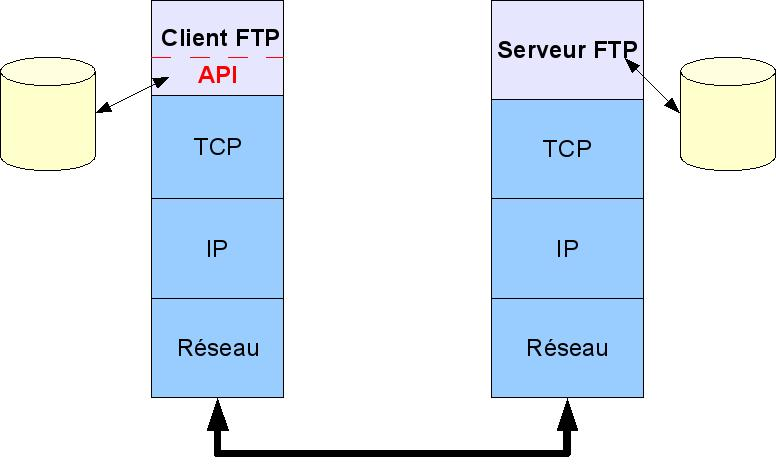
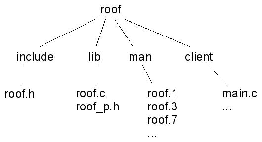
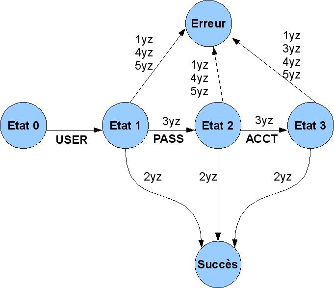
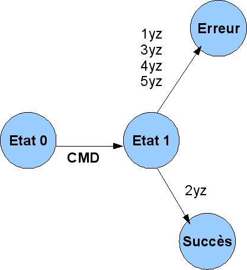
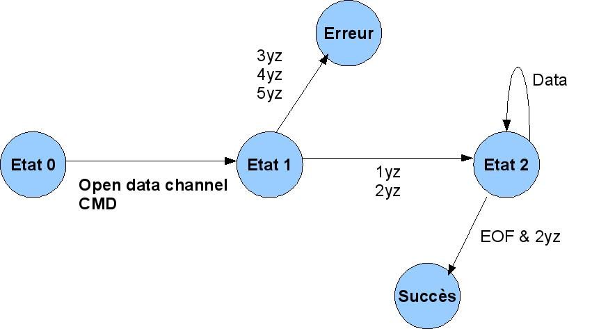
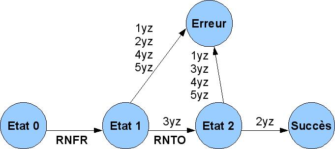

|
|
| |
|
|
De nombreux logiciels ont besoin de télécharger des fichiers à distance. Dans ce domaine, l'un des protocoles les plus anciens mais aussi le plus couramment utilisé est File Transfer Protocol (FTP). Après un rapide survol de la recommandation, cet article présente le développement d'une API écrite en langage C pour faciliter la mise en oeuvre d'un client FTP au sein des logiciels.
Avant proposLe protocole FTP spécifié dans la RFC959 a été conçu pour:
1. Faciliter le partage de fichiers.
2. Encourager l'utilisation de machines distantes.
3. Rendre un programme indépendant des spécificités de gestion des fichiers sur les systèmes distants.
4. Transférer des données efficacement et de manière sûre.
C'est un modèle client-serveur s'appuyant sur les couches TCP et IP comme indiqué en figure 1.
Figure 1 : Architecture d'un client-serveur FTP

L'établissement d'une connexion FTP consiste, pour le client, à ouvrir un canal de contrôle. Ensuite, un canal de données est éventuellement ouvert. Le canal de contrôle sert au transfert des commandes, des réponses aux commandes et des messages spontanés. Le canal de données n'est établi que si les commandes engendrent un transfert de données.
La communication sur le canal de contrôle est bidirectionnelle et conforme au protocole telnet décrit dans la RFC854. Dans la pratique, telnet est utilisé de manière très basique. Le dialogue est alterné dans le sens où le client envoie une commande à laquelle le serveur répond par un ou plusieurs messages. Chaque commande a une liste prédéfinie de réponses possibles. Le serveur peut aussi envoyer des messages spontanés pour fournir des informations diverses telles que « le système va s'arrêter dans 15 minutes » ou « le délai de connexion est expiré ».
La communication sur le canal de données est unidirectionnelle. Le sens de communication dépend du type de commande en exécution.
Un canal est en fait une connexion TCP comme illustré en figure 2.
Figure 2 : Les canaux de communication

Par défaut, le client demande l'ouverture du canal de contrôle sur le port TCP 21 de la machine serveur. Cela suppose que le serveur FTP est en écoute sur ce port. Les valeurs par défaut des ports pour les deux canaux sont consignées dans le fichier /etc/services :
|
$
cat /etc/services | grep ftp |
L'établissement du canal de données dépend du mode de fonctionnement du serveur : actif ou passif.
En mode actif, le serveur établit le canal de données sur le port du client qui est par défaut, le port qu'il a utilisé pour la connexion de contrôle. Le client a la possibilité de notifier au serveur un port de données différent par la commande PORT. En pratique, le mode actif est peu utilisé car souvent non supporté par les clients. De plus, si la machine sur laquelle le client s'exécute est protégée par un pare-feu, il y a de grandes chances que le serveur ne pourra pas établir de connexion sur le port du client.
En mode passif, le client établit le canal de données en utilisant la commande PASV pour demander au serveur de proposer un numéro de port TCP sur lequel le client établira un canal de données. Ce mode simplifie l'écriture des clients et sera celui utilisé par l'API présentée dans la suite.
Les commandes sont des lignes de données ASCII au format :
Commande paramètre1 paramètre2... CRLF
La commande est un mot de 4 caractères au maximum. Les majuscules et minuscules peuvent être utilisées de manière indifférente. Les paramètres peuvent ne pas apparaître si la commande n'en nécessite pas ou s'ils sont optionnels.
Les commandes les plus couramment utilisées sont décrites dans le tableau 1 (les paramètres décrits entre crochets sont facultatifs et les commandes marquées d'un astérisque font partie de l'ensemble minimum qu'un serveur FTP doit supporter pour être considéré conforme à la recommandation).
Tableau 1 : Liste des commandes FTP les plus usitées
|
Nom de commande |
Paramètres |
Description |
|
USER (*) |
nom_utilisateur |
C'est la première commande envoyée au serveur pour identifier l'utilisateur. |
|
PASS |
mot_de_passe |
Envoie un mot de passe au serveur si le nom d'utilisateur spécifié par la commande USER en nécessite un. On remarquera au passage le principal reproche fait à FTP : les mots de passe circulent en clair sur le réseau. |
|
CWD |
répertoire |
Changement de répertoire de travail encore appelé répertoire courant. |
|
CDUP |
|
C'est un raccourci de la commande CWD pour aller dans le répertoire père du répertoire courant. Sur Unix, c'est équivalent à la commande Shell cd .. mais pour d'autres systèmes, cela peut être différent. D'où l'intérêt de cette commande pour ignorer les spécificités d'un système à l'autre. |
|
QUIT (*) |
|
Déconnecte l'utilisateur courant et ferme le canal de contrôle. |
|
REIN |
|
Déconnecte l'utilisateur mais à la différence de QUIT, le canal de contrôle reste ouvert pour accepter une nouvelle commande USER afin de connecter un nouvel utilisateur. |
|
PORT (*) |
port_TCP |
Le client indique au serveur le numéro de port TCP sur lequel il attend l'établissement du canal de données : le serveur est en mode actif. |
|
PASV |
|
C'est l'opposée de la commande PORT. Le client demande au serveur un numéro de port TCP sur lequel le client établira le canal de données : le serveur est en mode passif. |
|
TYPE (*) |
type |
Indique le type des informations transférées sur le canal de données. Parmi les différents choix possibles, les plus utilisés et souvent les seuls supportés par les serveurs, sont le type ASCII (type = A) et le type binaire (type = I). |
|
STRU (*) |
structure |
Date de l'époque où certains systèmes d'exploitation structuraient leurs fichiers en pages ou enregistrements pour optimiser les temps de traitement. Cette commande est aussi utile pour l'implémentation de la reprise sur erreur. La structure par défaut est fichier (structure = F). |
|
MODE (*) |
mode |
Indique le mode de transfert des données. Cette commande est aussi utile pour l'implémentation de la reprise sur erreur. Le mode par défaut est stream (mode = S). |
|
RETR (*) |
fichier |
Demande le transfert d'un fichier du serveur vers le client. |
|
STOR (*) |
fichier |
Demande le transfert d'un fichier du client vers le serveur. |
|
RNFR |
fichier |
Demande le renommage d'un fichier sur le serveur. Cette commande spécifie le nom du fichier source et est suivie de RNTO pour le nom du fichier destination. |
|
RNTO |
fichier |
Cf. RNFR |
|
ABOR |
|
Demande l'arrêt de la commande en cours. Si un canal de données est ouvert, il est fermé par le serveur. |
|
DELE |
fichier |
Demande la destruction d'un fichier sur le serveur. |
|
RMD |
répertoire |
Demande la destruction d'un répertoire sur le serveur. |
|
MKD |
répertoire |
Demande la création d'un répertoire sur le serveur. |
|
PWD |
|
Demande au serveur le nom du répertoire courant. |
|
LIST |
[répertoire] ou [fichier] |
Demande au serveur les informations afférentes à un fichier ou tous les fichiers d'un répertoire (nom, droits, date de création, taille...). Par défaut, ce sont les fichiers du répertoire courant. Sur Unix, c'est normalement le résultat de la commande Shell ls -l mais sur d'autres systèmes cela peut être différent. |
|
NLST |
[répertoire] ou [fichier] |
Cette commande a le même comportement que la commande LIST mais ne liste que le nom des fichiers. L'avantage par rapport à LIST est d'avoir le même résultat quelque soit le système de fichiers côté serveur. Sur Unix, c'est normalement le résultat de la commande Shell ls -a. |
|
SYST |
|
Demande au serveur d'identifier son système d'exploitation. |
|
NOOP (*) |
|
Ne provoque aucune action sauf de demander au serveur de répondre OK. Cela peut servir à maintenir du trafic avec un serveur qui implémente un délai maximum d'inactivité avant déconnexion automatique. |
Une réponse est codée comme suit :
- La première ligne commence par un code à trois digits xyz immédiatement suivi d'un tiret éventuellement suivi d'un texte et terminée par les caractères CR et LF;
- Les lignes suivantes contiennent du texte quelconque et sont terminées par les caractères CR et LF
- La dernière ligne commence par le code à trois digits xyz de la première ligne suivi d'un caractère espace éventuellement suivi d'un texte et terminée par les caractères CR et LF. Si la réponse est monoligne, elle suit ce codage.
xyz sont 3 digits qui indiquent l'état d'avancement de la commande en cours. Le principe de codage des digits va du général au particulier : le premier digit donne une information qui est explicitée avec les deux digits qui suivent. Le tableau 2 donne les valeurs possibles pour le premier digit. La recommandation spécifie une liste de valeurs possibles pour les digits qui suivent mais il n'est pas utile de les citer ici d'autant plus que nous verrons dans l'implémentation de l'API qu'il est possible d'implémenter le protocole en ne tenant compte que de la valeur du premier digit.
Tableau 2 : Les valeurs du premier digit dans les réponses
|
Valeur |
Description |
|
1yz |
Réponse préliminaire positive : indique que la commande a été acceptée. |
|
2yz |
Terminaison positive : l'action a été exécutée correctement, une nouvelle action peut être engagée. |
|
3yz |
Réponse positive intermédiaire : la commande a été acceptée mais est en attente d'informations supplémentaires. Cela est utilisé pour les commandes groupées (e.g. RNFR et RNTO). |
|
4yz |
Terminaison négative transitoire : la commande n'a pas été acceptée mais la situation d'erreur est temporaire et la commande peut donc être relancée. |
|
5yz |
Terminaison négative permanente : la commande n'est pas acceptable en l'état. |
Le texte qui suit les digits dans les lignes de réponses est facultatif et souvent présent à titre d'information à l'exception de certaines commandes comme PASV qui impliquent une réponse avec un texte formaté. Le texte peut être composé de plusieurs lignes.
Les réponses sont la plupart du temps monolignes. Voici par exemple la réponse d'un serveur quand il demande le mot de passe d'un utilisateur :
| 331 Password required for foo. |
Dans ce cas, le code 3 indique que le serveur a accepté la commande précédente et est en attente d'informations supplémentaires : le mot de passe.
Les réponses multilignes ne sont généralement utilisées que pour afficher les bannières d'accueil lorsque le client se connecte (fichier /etc/ftpwelcome). A titre d'exemple, nous présentons la bannière émise par un serveur FTP tournant sur un système Linux après la phase d'identification du client. Le code suivi d'un tiret est affiché sur les lignes intermédiaires mais ce n'est pas obligatoire selon la recommandation. On notera surtout le code 230 suivi d'un tiret en première ligne et le même code 230 suivi d'un caractère espace en dernière ligne :
|
230-
Linux toto-host 2.6.22-14-generic #1 SMP Tue Dec 18 08:02:57 UTC 2007
i686 |
Dans ce cas, le code 2 indique que la commande précédente a été acceptée et qu'une nouvelle commande peut être lancée.
Après ce rapide passage en revue de la RFC959, il est possible de décrire l'API qui facilite le développement de clients telnet. Dans la description en couche du modèle FTP, l'API est un élément situé juste en dessous du client comme indiqué en figure 3.
Figure 3 : L'API dans le modèle FTP

Le nom de cette API est ROOF (pour « Remote Operations On Files »). Elle se présente sous la forme d'une librairie partagée disponible en « open source » et hébergée sur sourceforge.
Télécharger le fichier « .tgz » à partir de sourceforge. Décompresser le fichier avec la commande :
| $ tar xvfz roofxxx.tgz |
L'arborescence se présente comme indiqué en figure 4.
Figure 4 : L'arborescence de l'API

Le répertoire include contient le fichier roof.h dans lequel sont définis les services et structures de données publiques. Ce fichier devra être inclus par tout utilisateur de la librairie.
Le répertoire lib contient l'implémentation de la librairie libroof.so qui sera lié dynamiquement avec le programme utilisateur. Les fichiers sont roof.c pour l'API et roof_p.h pour les définitions internes.
Le répertoire client contient un exemple de client FTP qui utilise l'API : roof.
Le répertoire man contient les manuels en ligne de la librairie. Le manuel se répartit dans les sections 1 (commande roof pour le client), 3 (API) et 7 (description générale).
La processus de génération utilise un script appelé roof_install.sh basé sur cmake ([4] et [6]) qu'il faut donc avoir installé sur son système. Ici est montré comment générer et installer à l'aide de cmake dans le répertoire par défaut /usr/local (l'installation recquiert les droits du super utilisateur) :
|
$ cd
roofxxx |
Pour vérifier l'installation, consulter un manuel en ligne de roof (en mettant éventuellement à jour la variable d'environnement MANPATH avec /usr/loca/man) :
|
$
man 3 roof
|
Il est aussi possible de tester l'exécutable roof (en mettant éventuellement à jour la variable d'environnement LD_LIBRARY_PATH avec /usr/local/lib si le liaison dynamique avec libroof.so pose problème) :
|
$
roof
|
Pour être pratique et robuste, une API se doit d'être réentrante de sorte à supporter plusieurs instances d'exécution en même temps. Cette précaution trouve toute sa signification quand le logiciel qui l'utilise est « multithreadé » : plusieurs threads s'exécutant en parallèle peuvent utiliser la librairie. Un mutex est donc créé et initialisé dans le point d'entrée de la librairie déclaré comme suit, pour être identifié et exécuté par le « linker » dynamique au moment du chargement (cf. [5] pour plus de détails) :
|
void
__attribute__ ((constructor)) roof_initialize(void); |
|
#define
ROOF_LOCK() (pthread_mutex_lock(&roof_mtx)) |
Le contexte est une structure de données qui identifie une instance de la librairie. Il y a un contexte de type roof_ctx_t par utilisateur :
|
typedef
struct |
Le champ ctx pointe sur des données privées à l'utilisateur. La librairie n'a aucune action sur ce pointeur. Cela permet simplement à l'utilisateur d'associer des données quelconques à son instance d'exécution dans la librairie. En interne, le contexte utilisateur est stocké dans le champ ctx de la structure roof_context_t définie comme suit dans roof_p.h :
|
typedef
struct |
Si cette structure apparaîssait dans le fichier header public roof.h, l'utilisateur de la librairie serait tenté d'utiliser les champs explicitement dans son code. Cela pourrait rendre son programme incompatible avec de futures versions de la librairie (si les champs sont renommés ou disparaîssent) et pourrait porter atteinte à l'intégrité de la librairie (si les champs sont modifiés à l'insu de l'API).
Dans la suite, roof_ctx_t sera appelé « contexte externe » (celui vu par l'utilisateur) et roof_context_t sera appelé « contexte interne » (celui vu par la librairie). Pour retrouver le second à partir du premier, la librairie utilise la macro ROOF_CTX() qui retrouve l'adresse du contexte interne à partir de celle du contexte externe et l'offset du champ ctx dans la structure roof_context_t :
|
#define ROOF_CTX(p) ((roof_context_t *) ((char *)p - offsetof(roof_context_t, ctx))) |
Inversement, le contexte externe est retrouvé à partir du contexte interne grâce à la macro ROOF_EXT_CTX() qui ne fait que retourner l'adresse du champ ctx de roof_context_t :
| #define ROOF_EXT_CTX(p) ((roof_ctx_t *)&(p->ctx)) |
La librairie définit un nombre maximum de contextes avec la constante ROOF_NB_MAX_CTX qui sert à dimensionner la table des contextes roof_context[] dans roof.c.
La toute première chose à faire pour l'utilisateur de la librairie est de réserver un contexte à l'aide du service roof_new() :
|
roof_ctx_t
*roof_new( ROOF_LOCK();
// Recherche
d'un
contexte
libre ROOF_UNLOCK();
if
(i >= ROOF_NB_MAX_CTX) roof_context[i].debug_level = 0;
// Si
buffer alloue par l'utilisateur
roof_context[i].ctrl
= -1;
return
(roof_ctx_t *)&(roof_context[i].ctx); |
Un contexte libre (champ busy = 0) est recherché dans la table globale des contextes. La recherche se fait dans une section critique protégée par le mutex (macros ROOF_LOCK() et ROOF_UNLOCK()) pour assurer la réentrance. Le contexte trouvé est initialisé avec les paramètres passés au service. Le premier paramètre timeout_ms est le temps maximum en millisecondes que le service attendra pour recevoir une réponse de la part du serveur. Il est conseillé de le positionner à quelques secondes de sorte à éviter d'avoir un programme qui se met en attente infinie si le serveur ne répond pas. Les paramètres suivants iobuf et l_iobuf sont respectivement l'adresse et la taille du buffer d'entrée/sortie utilisé pour le dialogue avec le serveur. Si l'appelant passe NULL pour l'adresse ou 0 pour la taille, le buffer sera alloué en interne par le service avec une taille par défaut de ROOF_IO_BUF_SIZE octets (défini en interne dans roof_p.h). La valeur retournée par le service est NULL en cas d'erreur ou le contexte externe en cas de succès (dans ce cas c'est l'adresse du champ ctx de la structure roof_context_t). Du point de vue de l'utilisateur, ce contexte est un identifiant qu'il devra passer à tous les autres services pour identifier son instance d'exécution.
Losrque l'utilisateur n'a plus besoin de son contexte d'exécution, il fait appel à la fonction roof_delete() pour libérer les ressources :
|
void roof_delete(roof_ctx_t *pContext) // Contexte externe
{ //
Desallocation du buffer d'E/S si alloue en interne // Fermeture
de socket de controle si ouverte ROOF_LOCK();
pCtx->busy
= 0; ROOF_UNLOCK(); } // roof_delete |
La fonction effectue les opération inverses à roof_new(). Le buffer d'entrée/sortie est libéré s'il a été alloué en interne (champ internal_iobuf != 0), la socket sur le canal de contrôle est fermée « proprement » à l'aide de shutdown() puis close() si elle est ouverte et enfin le champ busy est mis à 0 pour marquer le contexte comme étant libre pour un nouvel utilisateur.
La communication avec le serveur utilise le protocole TCP/IP qui est masqué par la librairie socket de Linux. Cela permet d'envoyer et recevoir des données sur le réseau via un descripteur de fichier en utilisant les appels système classiques read() et write() comme si on écrivait ou lisait un fichier (c'est l'application du fameux concept de base « tout est fichier » d'Unix).
Dans la librairie, deux fonctions roof_read() et roof_write() encapsulent les appels systèmes read() et write() pour essentiellement utiliser la notion de contexte où se trouvent des informations utiles comme le niveau de debug utilisé par certaines macros de trace et traiter le retour erreur EINTR. Un signal, étant asynchrone, peut survenir à tout moment et interrompre les instructions en cours pour déclencher un handler préalablement définie par l'utilisateur pour le gérer. Il s'avère que sous Linux, la plupart des appels système retournent en erreur avec la variable errno positionnée à EINTR s'ils sont interrompus par un signal. roof_read() et roof_write() testent donc ce code d'erreur pour réitérer l'appel système.
Voici la fonction roof_write() :
|
static
int roof_write( l = len;
do
if
(rc < 0)
if
(rc > 0) if
(-1 == rc)
ROOF_ERR(pCtx,
"Error '%s' (%d) on write()\n", return
rc; |
Voici la fonction roof_read() :
|
static
int roof_read( do
saved_errno
= errno;
return
-1; return rc; } // roof_read |
Dans les exemples précédents, la variable errno est sauvegardée avant l'appel aux macros de génération des messages d'erreur et restaurée après car on veut préserver la valeur de l'erreur en sortant de roof_write() et roof_read(). La sauvegarde est obligatoire car la macro d'erreur fait appel à des fonctions de la librairie C telles que printf() qui peuvent altérer la valeur de errno. C'est une méthode préconisée par le manuel en ligne : man 3 errno.
Ces fonctions auraient pu se contenter d'utiliser l'adresse du buffer d'entrée/sortie stockée dans le contexte interne au lieu de recevoir l'adresse en paramètre. Mais dans certains cas, elles sont utilisées avec un buffer autre que le buffer d'entrée/sortie du contexte ou alors avec ce buffer mais à un offset donné lors des lectures des réponses multilignes par exemple.
L'une des grandes fonctions du client est d'envoyer des commandes au serveur. Comme il l'a été vu au § 1.4, les commandes sont composées d'un mot clé éventuellement suivi d'un paramètre et terminées par les caractères de fin de ligne CR et LF. Les commandes sont envoyées par le client sur le canal de contrôle. C'est la fonction interne roof_send_cmd() qui réalise cette opération :
|
static
int roof_send_cmd(
va_start(args_list,
format); [...]
return 0; |
La fonction, qui est à nombre d'arguments variable, reçoit en paramètre une commande spécifiée par un format à la printf() décodé à l'aide du service vsnprintf() de la librairie C. Cela permet de la rendre générique afin d'envoyer toute commande avec ou sans paramètres. Par exemple, pour envoyer une commande sans paramètres comme PASV :
| rc = roof_send_cmd(pCtx, "PASV\r\n"); |
Et pour envoyer une commande avec paramètres comme TYPE :
| rc = roof_send_cmd(pCtx, "TYPE %c %c\r\n", type, code); |
L'autre grande fonction du client est de recevoir des réponses de la part du serveur. Comme indiqué au § 1.5, les réponses ont un format bien déterminé et peuvent être composées d'une ou plusieurs lignes. C'est la fonction roof_get_reply() qui réalise cette opération :
|
int
roof_get_reply(
*reply
= NULL; one_more_time:
FD_ZERO(&fdset);
if
(pCtx->timeout_ms)
switch(rc)
ROOF_ERR(pCtx,
"Error '%s' (%d) on select()\n", strerror(errno), errno);
case
0: // Timeout
case
1 : // Données en provenance de la connexion
rc
= roof_read_line(pCtx,
pCtx->ctrl,
pCtx->iobuf
+
offset,
lreply);
//
Ajout d'informations additionnelles si assez de place
*reply
= pCtx->iobuf; [...]
//
Recherche de la fin de ligne
// Est-ce
une réponse multiligne ?
//
Espace restant dans le buffer d'entrée
//
Nouveau début de buffer d'entrée dans le cas // C'est une réponse monoligne
//
Terminer la ligne en écrasant le dernier caractère
<CR>
return
0;
//
Terminer la ligne en écrasant le dernier caractère
<CR> *reply = pCtx->iobuf;
return
0;
//
Nouveau début de buffer pour une réponse multiligne
//
Lecture de la ligne suivante
}
i
++;
default
: // Impossible ???!!!??? } // roof_get_reply |
La fonction bien qu'un peu longue est simple, elle se base sur l'appel système select() pour attendre des données de la part du serveur sur le canal de contrôle (socket ctrl stockée dans le contexte interne). On notera l'utilisation du timeout si celui-ci a été spécifié par l'utilisateur lors de l'appel à roof_new() décrit au § 2.3. Cela évite d'attendre une réponse qui ne viendrait pas si le serveur a un problème. La fonction est capable de lire des réponses d'une ou plusieurs lignes en testant la présence du tiret derrière le code à 3 digits. Pour lire les lignes de données envoyées par le serveur, la fonction s'appuie sur la routine interne roof_read_line() qui lit des données jusqu'à l'apparition des caractères CR et LF. Il n'est pas très utile de la citer dans l'article.
roof_get_reply() fait partie de l'API car non seulement elle est utilisée en interne comme nous le verrons mais peut aussi être utilisée en externe par l'utilisateur désireux de réceptionner les messages spontanés de la part du serveur. C'est donc pour cela qu'elle reçoit en paramètre un contexte externe et non pas interne.
Nous verrons dans les fonctions suivantes que le traitement des réponses de la part du serveur consiste à ne regarder que le premier digit du code à 3 chiffres car il suffit à lui seul pour déterminer les actions à entreprendre par la suite (cela est précisé au § 4.2 de la RFC959).
La connexion au serveur consiste tout d'abord à établir le canal de contrôle conformément à ce qui est indiqué au début du § 5.4 de la RFC959 : le canal de contrôle TCP est ouvert et le serveur envoie une réponse avec le code 220 pour indiquer qu'il est prêt. S'il n'est pas prêt à recevoir des commandes, le serveur envoie une réponse 120 et le client est sensé attendre jusqu'à réception de la réponse 220.
C'est la mission de la fonction de service roof_open_ctrl() qui reçoit en paramètres l'adresse du serveur (qui peut être un nom de machine ou une adresse IP) et son numéro de port TCP. Si le serveur est en attente sur le port standard (ce qui est généralement le cas), l'utilisateur a la possibilité d'utiliser la constante ROOF_DEF_PORT au lieu de la valeur en dur 21. Le code de retour de ce service est la socket sur le canal de contrôle ou -1 en cas d'erreur. Le champ ctrl du contexte interne mémorise l'identifiant de socket. On remarquera l'utilisation de l'option de socket SO_LINGER pour faire en sorte que le protocole TCP donne toutes les chances à l'autre partie pour récupérer les données en attente avant fermeture définitive de la connexion.
|
int
roof_open_ctrl( // Connexion
au host distant
// On
boucle jusqu'à obtention de la réponse 2yz ou timeout
rc
= sd; error: err_sav = errno;
if
(sd >= 0)
pCtx->ctrl
= -1; end:
return
rc; |
La deuxième et dernière phase de la connexion au serveur est la mise en oeuvre de la procédure d'identification. La RFC959 propose un diagramme qui est reproduit (avec quelques adaptations) en figure 5. Le diagramme montre que en fonction des serveurs, l'identification se contentera de la commande USER ou alors de la commande USER suivie de la commande PASS ou enfin de la commande USER suivie de la commande PASS suivie de la commande ACCT. Dans la pratique, le cas le plus courant est USER suivi de PASS.
Figure 5 : Diagramme d'identification

C'est la fonction de service roof_login() qui met en oeuvre l'automate d'identification. Nous citons cette fonction afin de montrer que les commandes sont envoyées par la routine interne roof_send_cmd() vue plus haut, les réponses sont réceptionnées par le service roof_get_reply() vu plus haut et les diagrammes de la recommandation sont implémentés sous forme d'une série de switch/case pour tester les valeurs des réponses et de goto pour changer d'état.
|
int
roof_login(
assert(NULL
!= pCtx);
if
(!login || !(login[0]))
rc
= roof_send_cmd(pCtx,
"USER
%s\r\n",
login);
case
'3' : // Reponse positive
intermediaire
case
'2' : // Terminaison positive
default
: // Normalement impossible send_passwd:
if
(!passwd || !(passwd[0])) rc
= roof_send_cmd(pCtx,
"PASS
%s\r\n",
passwd);
case
'3' : // Reponse positive
intermediaire
case
'2' : // Terminaison positive
default
: // Normalement impossible send_account:
if
(!account || !(account[0]))
rc
= roof_send_cmd(pCtx,
"ACCT
%s\r\n",
account);
case
'2' : // Terminaison positive
default
: // Normalement impossible end:
return
0; |
Le diagramme de la figure 6 est le premier présenté au § 6 de la RFC959. Il concerne les commandes ABOR, ALLO, DELE, CWD, CDUP, SMNT, HELP, MODE, NOOP, PASV, QUIT, SITE, PORT, SYST, STAT, RMD, MKD, PWD, STRU et TYPE.

Le diagramme de la figure 7 est le second présenté au § 6 de la RFC959. Il concerne les commandes de transfert des données APPE, LIST, NLST, REIN, RETR, STOR et STOU.

Cette automate introduit la fonction roof_open_data() qui ouvre le canal de données afin de transférer le contenu des fichiers ou répertoires :
|
static
int roof_open_data(roof_context_t *pCtx) // Contexte interne
rc
= roof_send_cmd(pCtx,
"PASV\r\n");
//
Parsing de la réponse du serveur pour obtenir le numéro
de port
if
(*p != ')') *p = '\0';
while
((p != pCtx->iobuf) && (*p != ','))
if
((*p != ',') && (!isdigit(*(p+1)))) *p = '\0'; port_lsb = atoi(p+1);
while
((p != pCtx->iobuf) && (*p != ','))
if
((*p != ',') && (!isdigit(*(p+1)))) *p = '\0';
port_msb
= atoi(p+1);
//
Conversion de l'adresse en format « point »
p
--;
if
(*p != '(')
//
Renseignement de l'adresse du serveur
//
Création de la socket pour le canal de données } // roof_open_data |
La commande PASV est envoyée au serveur pour le faire passer en mode passif. Le serveur répond par un code « 2 » du style « 227 Entering Passive Mode (127,0,0,1,128,87) » pour donner le numéro de port sur lequel il va attendre une connexion du client. Les nombres entre parenthèses séparés par des virgules sont normalisés dans la RFC959. Ils représentent de gauche à droite l'adresse IP (les quatre premiers champs, soient 127.0.0.1), le poids fort et le poids faible du numéro de port codé sur 16 bits (soit 128 * 256 + 87 = 32855). Une fois ces informations obtenues, une socket est créée pour établir le canal de données avec le serveur. L'identifiant de la socket est le code de retour de la fonction si tout s'est bien passé (sinon l'erreur -1 est retournée).
Nous ne décrirons pas ici les fonctions qui implémentent les commandes se basant sur le diagramme numéro 2 car elles utilisent le même principe que roof_login() vue plus haut.
Le diagramme de la figure 8 est le troisième présenté au § 6 de la RFC959. Il concerne les commandes de renommage de fichier RNFR et RNTO. Cette automate est implémenté dans la fonction de service roof_mv().

Pour un exemple complet, le lecteur pourra se référer au code source de ROOF : le sous-répertoire client contient un exemple de client FTP en mode ligne de commande se basant sur l'API.
Ici est présenté un tout petit programme d'exemple appelé test_ftp qui effectue une connexion vers un serveur, affiche le type du système hôte, affiche le nom du répertoire de travail et liste le contenu de ce dernier :
|
#include
<stdio.h>
//
Installe par defaut dans '/usr/local/include'
//
Callback pour afficher le contenu d'un repertoire (void)ctx; // Parametre non utilise (suppression warning compilo)
rc
= write(1, buf, lbuf);
//
Retour OK a la librairie
//
Point d'entree du programme
//
Validation des parametres du programme
//
Ouverture du canal de controle //
Affichage du type du systeme hote
//
Affichage du chemin du repertoire courant
//
Affichage du contenu du repertoire courant
//
Fermeture du canal de controle
//
Desallocation de l'objet ROOF return 0; } // main |
Le programme peut être généré comme suit si la librairie libroof.so a été installée :
|
$ gcc test_ftp.c -o test_ftp -lroof |
Voici, pour finir, un exemple d'exécution du programme de test avec connexion au serveur de la machine locale (localhost), avec le nom de login « foo » et le mot de passe « bar » :
|
$
./test_ftp localhost foo bar |
Après une étude rapide de la recommandation FTP, il a été possible de développer une API appelé ROOF très simple à mettre en oeuvre et adaptable à toute application nécessitant le transfert de fichiers par un protocole standard. Comme exemples d'applications dans lesquelles le lecteur pourrait se lancer, on peut citer un client FTP en mode graphique ou un système de fichiers distant basé sur FUSE comme alternative à NFS.
Pour approfondir le sujet, le lecteur pourra aussi s'intéresser aux évolutions du protocole car FTP a fait l'objet de diverses améliorations depuis sa création et notamment, sur le plan de la fiabilité et de la sécurité pour donner : SFTP (« FTP over SSH » à ne pas confondre avec « Simple FTP ») ou FTPS (« FTP over SSL »).
[1] Recommandation FTP : http://www.ietf.org/rfc/rfc959.txt
[2] Recommandation TELNET : http://www.ietf.org/rfc/rfc854.txt
[3] Remote Operations On Files : http://roof.sourceforge.net/
[4] Aperçu de cmake : http://rachid.koucha.free.fr/tech_corner/cmake_manual.html
[5] Constructeurs/destructeurs dans les librairies partagées : http://tldp.org/HOWTO/Program-Library-HOWTO/miscellaneous.html#INIT-AND-CLEANUP
[6] Courbot (Alexandre), « Cmake : la relève dans la construction de projets », GLMF 92, Mars 2007
[7] Tricon (Lionel), « FUSE, développez vos systèmes de fichiers dans l'espace utilisateur », GLMF 92, Mars 2007
|
|
Page principale
Page précédente